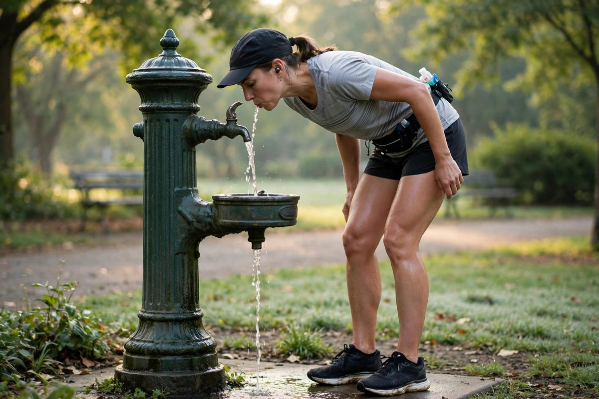

Water Intake for Runners
How runners should hydrate before, during and after a run, how to estimate sweat loss, and how to avoid over-drinking.
Running raises water needs more than most exercise, because it generates a lot of heat and the body cools itself by sweating. Getting hydration right makes runs feel easier and safer, while getting it wrong leads to fatigue, cramps, or in rare cases over-drinking. This guide covers the practical side of hydration for runners, from a short jog to a long run.
How much runners sweat
A runner typically loses 0.5 to 1.5 litres of sweat an hour, depending on pace, body size, temperature and humidity. A 70 kg runner on a warm day might lose a litre an hour, while the same runner on a cool day might lose half that. The simplest way to find your own rate is to weigh yourself before and after a run: each kilogram lost is roughly a litre of fluid. Do this for a few runs in different conditions, and you will have a personal figure that beats any generic guideline.
Before a run
Drink about 300 to 500 ml in the two hours before a run, so you start hydrated. For a morning run, drink a glass on waking. Avoid a large volume just before starting, because it can slosh uncomfortably. If the run is long or the day is hot, drink a little more beforehand, and eat a small salty snack if you sweat heavily. Pale urine before you start is a good sign.
During a run
For runs under an hour, you can usually manage without drinking, though a small sip is fine if you are thirsty. For runs over an hour, plan to drink 400 to 800 ml per hour, sipped regularly rather than in large gulps. Carry water on a belt or in a handheld bottle, or plan a route past water fountains. In hot weather, drink on a schedule rather than waiting for thirst, because thirst lags behind loss when you are running.
After a run
Replace the fluid you lost, plus a little extra: about 1.5 litres for every kilogram lost during the run, spread over the hours after rather than all at once. Eat a meal or a salty snack afterwards, because food replaces the salts lost in sweat and helps the body hold on to the water. A sports drink can help after a long run, but water and food are enough after most runs. Keep drinking until your urine is pale again.
Avoiding over-drinking
Over-drinking is a real risk for slower runners, who have more time to drink, and for runners who force fluids on a rigid schedule. Drinking far more than you lose dilutes blood sodium and can cause hyponatraemia, with symptoms such as headache, nausea, confusion and swelling. Drink to a plan based on your own sweat rate, not to a maximum, and do not force water when you are not thirsty and your urine is clear. If you feel unwell during or after a run, stop, cool down, and seek medical help if symptoms do not improve.
A long run, planned drink by drink
Take a 10 km run on a warm morning, lasting about an hour. Drink 300 to 500 ml in the two hours before, carry a small bottle and sip 200 to 300 ml during the run if you are thirsty, and drink 500 to 750 ml afterwards, with a salty snack or a meal. The total around the run is about 1 to 1.5 litres, which replaces the sweat lost. For a 20 km run lasting two hours, the plan doubles: drink before, carry more, sip 400 to 800 ml per hour during, and replace about 1.5 litres for every kilogram lost afterwards, with a sports drink or salty food for the salts. Weigh yourself before and after the long run a few times, and you will know your own sweat rate, which makes every future plan accurate.
Frequently Asked Questions
How much water should I drink while running?
For runs over an hour, about 400 to 800 ml per hour, sipped regularly. Shorter runs usually need no drink during the run.
How do I know my sweat rate?
Weigh yourself before and after a run. Each kilogram lost is roughly a litre of fluid.
Can runners drink too much water?
Yes. Drinking far more than you lose can dilute blood sodium. Drink to your own sweat rate, not to a maximum.